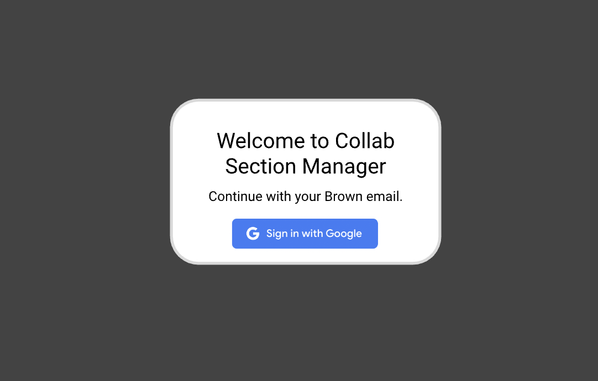
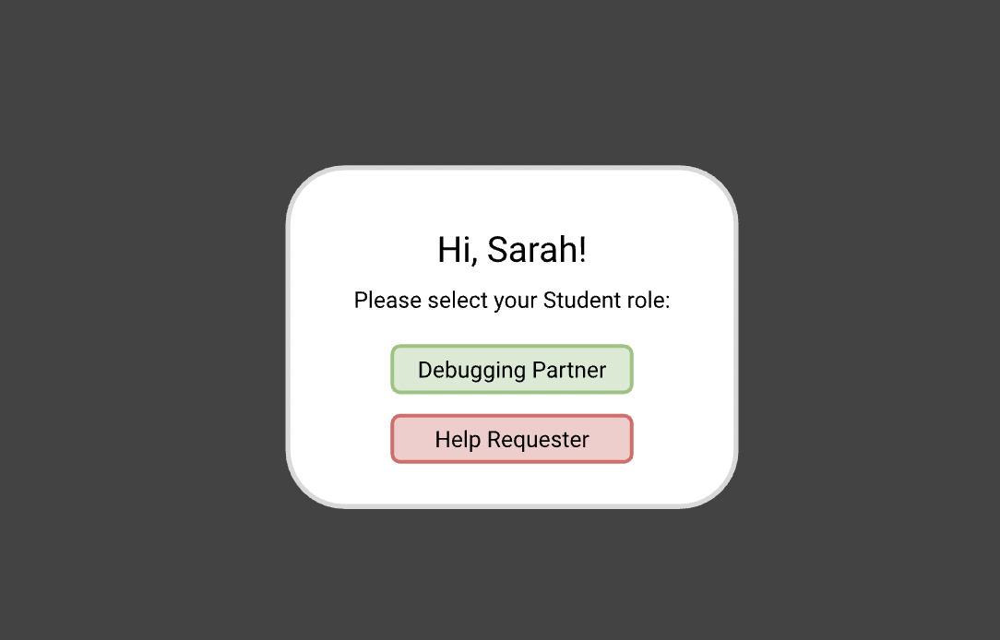
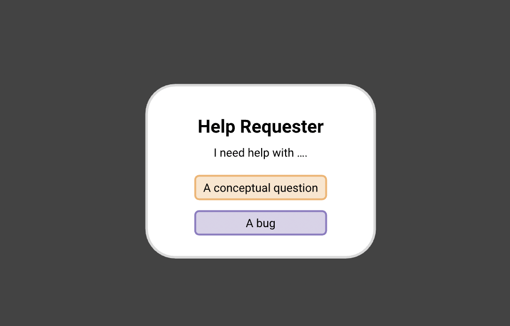
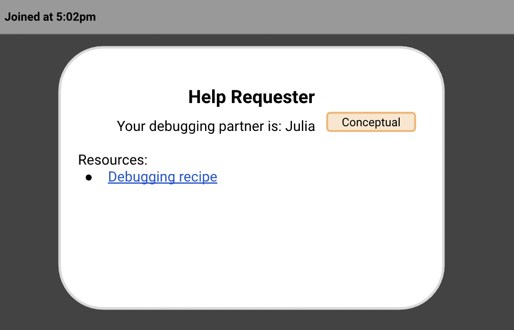
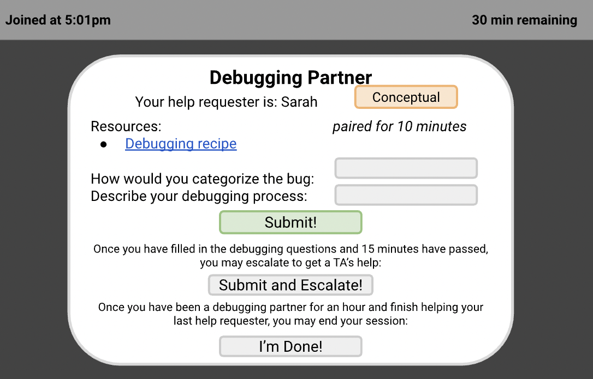
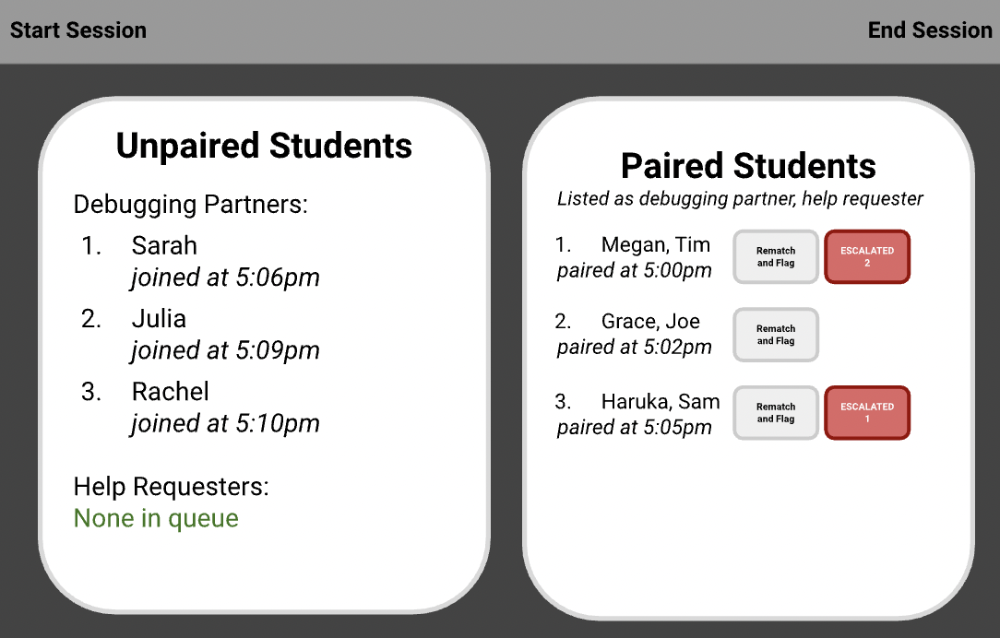

This project is a full stack web application deployed to administer collab hours in CSCI0320: Introduction to Software Engineering at Brown.
UI/UX Designer and Backend Developer
Megan Ball, Rachel Brooks, Sarah Ridley, and Julia Zdzilowska
November - December 2023
React, Typescript, CSS, Java
I worked on this project on a team of 4 for my final project as a student in CSCI0320. We chose this project after noticing the lack of organization of collab hours in the course, where students serve as one anothers' teaching assistants (TAs).
The goal of the application is to seamlessly pair and manage students during collab hours. We built the backend in Java and the frontend with TypeScript and React. In particular, I focused on building the backend and ensuring that it was thread safe and could handle requests from many students at once. Despite my backend-heavy work, I also created the sketches for the frontend. Throughout the design process, we prioritized accessible features, including aria labels and color schemes that are inclusive of low-vision users.
The core problem was poor organization. Prior to our system, instructors used Google forms to pair help requesters and debugging partners. Also, there are many resources used in collaboration hours, but the tools are scattered across various locations.
We realized we could streamline this process in one full stack application to make collab hours more productive, organized and standardized.
The first step of our project was to conduct user research to understand how to design our application to best address all of our stakeholders' needs. Our stakeholders include the students and the instructors of the course. Here are the questions we asked our stakeholders:
Below are summaries of the responses we received from our stakeholders:
After our user research, we had a more clear vision of what our stakeholders needed out of our application for managing collab hours. Here are the main features we needed to prioritize:
Queue for help requesters and a queue for debugging partners, students will be paired in FIFO order
Ability for instructors to remove and/or flag a debugging partner if they are absent
Available on the debugging partner dashboard after 15 minutes on the timer, and the instructor dashboard will have a list of who is escalated
Instructors have the ability to begin and end the collab hours session after the time block is over
Separate views for instructors, help requesters, and debugging partners, all prioritizing accessibility
The form will be embedded on the website instead of a separate google form, and answers will be saved to CSV on the backend
Automatically collected from student login, and instructors can download
Help requesters can choose whether they have a bug or conceptual question
Students and instructors log in with Google via Firebase authentication
After deciding on our principal features together, I took on the task of creating sketches for the user interfaces. My goal in this design was to create dashboards that are simple and accessible. For accessibility, I focused on high color contrast and intuitive focus order. Creating these sketches also helped me imagine how the application would flow between these pages.
Login Page
Student Role Selection
Help Requester Question Selection
Help Requester View
Debugging Partner View
Instructor View
Finally, the largest part of this project was building the frontend and backend of the website. As mentioned, I focused on building the backend in Java, and my teammates worked on developing the frontend in React and Typescript. We started by mocking the frontend and backend, and worked through an iterative process over 4 weeks, sharing our designs and feedback with one another.
As the main backend designer, I had the opportunity to design an efficient and reliable system for pairing students. My main concerns were that no students were dropped and did not receive the help they needed, and that debugging partners could not cheat the system and receive credit without showing up. To address the first, I built two queues that continuously pop and pair debugging partners and help requesters. I also built a feature to track attendance, and give instructors the power to remove absent students from the record. Below is the final website:
Login Page

Student Role Selection

Help Requester Question Selection

Help Requester View

Debugging Partner View

Instructor View

Two semesters after developing this application as my final project in CSCI0320, I became a TA for the course. I pitched the idea of using this application in practice to run collab hours, and the head TAs agreed. This gave me the unique opportunity to deploy the frontend and backend and test the application with real student users.
After I deployed the system for the course, it experienced a variety of concurrency and storage issues, which I resolved throughout the semester. Although this was difficult, I felt so much pride to be using my application with real users and learned a lot. In this process, I also saw that importance of protecting user privacy up close, given that debugging the backend, I could see complete logs of user interactions.
If I could do this project again, I would have brought up concerns of user privacy earlier in the development process, and explicitly collected consent for the student information we tracked and stored. As students, there is a reasonable expectation that instructors will collect data about participation in course activites, yet it is still important that they are informed of this collection. Overall, this project was a great opportunity to learn how to conduct user research, iteratively build a full stack application, and resolve bugs once it was deployed.